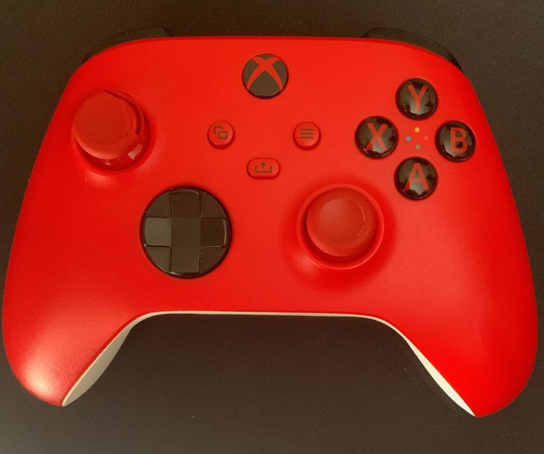
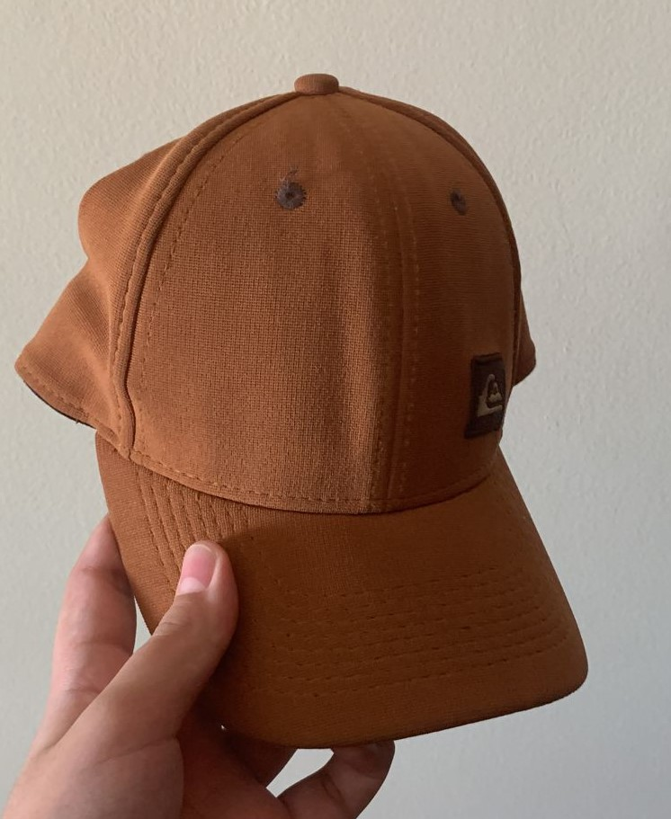

- Imagem 1: 
- Imagem 2: 
-
Imagem 3:

-
Imagem 4:

-
Imagem 5:

X
MobileNet
Resultado no GOOGLE LENS : Microsoft Xbox Series X/S Controle Sem Fio
Resultado no Modelo MobileNet : Joystick(Controle de Video Game)
Resultado:
EMPATE
Resultado no GOOGLE LENS : Boné Original Quiksilver Snapback Decades
Resultado no Modelo MobileNet : Mask(Máscara)
Resultado:
GOOGLE LENS é mais preciso
Resultado no GOOGLE LENS : Boneco Funko Pop Games Fortinite Meowscles
Resultado no Modelo MobileNet : Microphone(Microfone)
Resultado:
GOOGLE LENS é mais preciso
Resultado no GOOGLE LENS : Original TV Remote Control for Samsung
Resultado no Modelo MobileNet : Remote Control(Controle Remoto)
Resultado:
EMPATE
Resultado no GOOGLE LENS : Chinelo Nike Victori One Masculino Shower Slide
Resultado no Modelo MobileNet : Band Aid(Atadaura)
Resultado:
GOOGLE LENS é mais preciso
Resultado: Testei 5 imagens, GOOGLE LENS acertou 5 imagens. MobileNet acertou 2 imagens, contudo houve 2 empates. Assim GOOGLE LENS é mais preciso